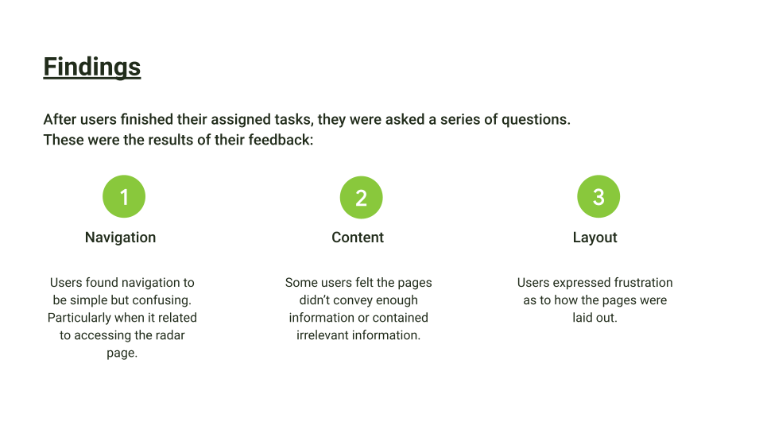

I made some assumptions when going into this project. I was aware that users wanted quick and easy access to the information that was most relevant to them. I also assumed most users would prefer to view it through their mobile devices. As such, I went with a mobile first design philosophy to better allow for smaller screens. This would allow me to provide things like pop-up notifications or alerts.
Process
Research
Find out how the competition solves this problem, if they have solved it at all.
Ideation
Come up with as many ideas as possible and pick the best one from the bunch

Testing
See if the ideas work in practice and keep testing until it works

Design
Finalize the process by coming up with the final look and feel of the product
I wanted the app to look as neatly organized as possible to reduced information clutter while still delivering all the relevant information needed in any weather app.
Several design choices I made during the ideation phase were made with the idea that most people wanted their weather alerts first before they receive any general weather information
Results
I measured success based on the time on a task the user spent. Here we see that the first iteration of the app lead to longer times than later iterations.

Laying the Foundation
My first iteration didn't go well with testing so I went back to the drawing board. I settled on an 8-point grid layout with a minimalist aesthetic. Colors are still a struggle for me so I decided a simple blue, to match the color of the sky, would be best for a base color. For typography, I went with the Roboto font since its most used in many designs.
Positive feedback increased 10 fold after fully refining the app to its final prototype. All participants were able to complete the task assigned to them quickly and without distractions.
Some things that I took away from completing this project are:
-
Users prefer information to be given to them by the first page. When it comes to weather apps, the more you can cram into the front page, the higher the user retention.
-
Unlike most apps, weather apps, such as this one, have a higher click through rate. Most users like the idea of having all the information avaliable to them within a few taps.
-
More testing is required to improve the user experience. People that were interviewed for this project have said they normally don't use weather apps for anything other than planning. As such, a possible consideration to this project would be to add the capability to sync with ones calander and alert the user of possible weather that might affect their plans.